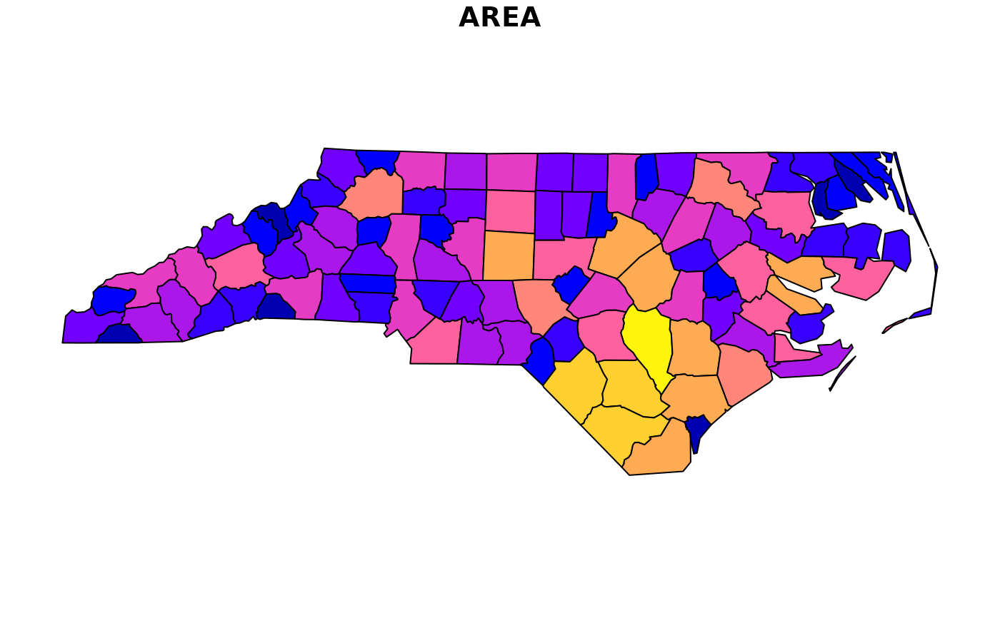
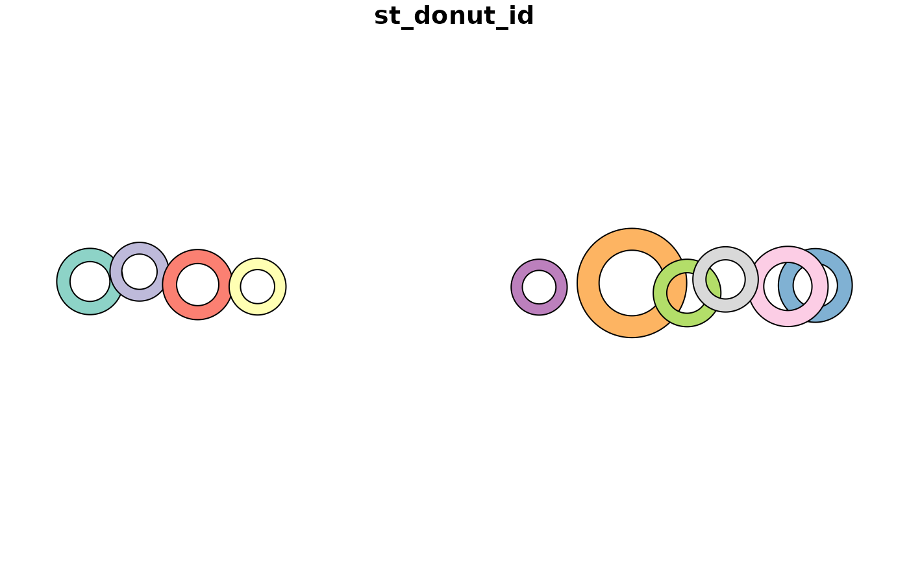
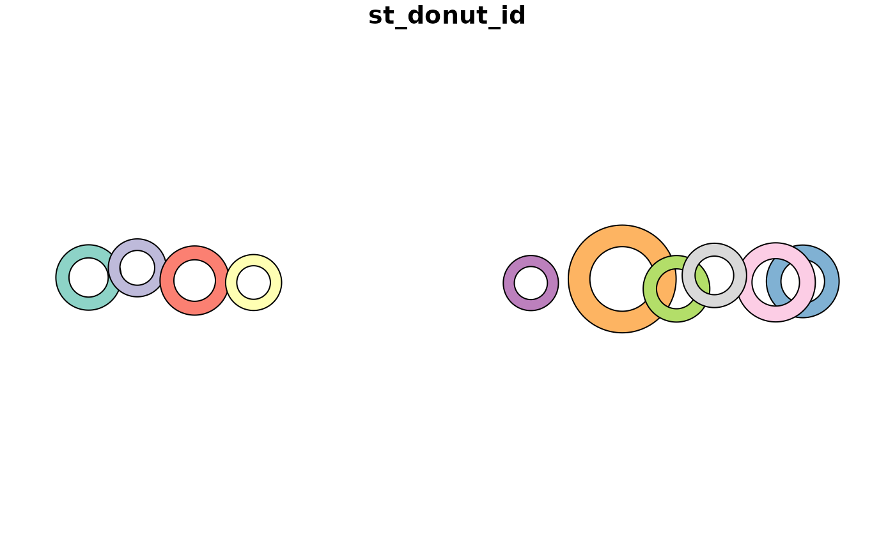

Support sf, sfc, and bbox and objects as inputs.
Get the center point for a
sfobjectGet a circumscribed circle or inscribed circle in a
sfobjectGet a donut for a
sfobject (may not work ifinscribed = TRUE)
st_inscribed_square wraps sf::st_inscribed_circle() but limits the circle
to 1 segment per quadrant (nQuadSegs = 1) and then rotates the resulting
geometry 45 degrees to provide a (mostly) inscribed square. A different
rotation value can be provided to change the orientation of the shape, e.g.
rotate = -45 to return a diamond shape. st_square() wraps st_bbox_ext()
with asp = 1.
Usage
st_center(x, class = "list", ext = TRUE, ...)
st_circle(
x,
scale = 1,
inscribed = TRUE,
dTolerance = 0.01,
by_feature = FALSE,
use_hull = FALSE,
use_lwgeom = FALSE
)
st_circumscribed_circle(x, scale = 1, dTolerance = 0, by_feature = FALSE)
st_donut(x, width = 0.4, scale = 1, inscribed = FALSE, by_feature = TRUE, ...)Arguments
- x
A
sf,sfc, orbboxobject- class
Class to return for
st_center(): "sfc", "sf", "geometry" (original input geometry), "x" (original input object), "crs" (original input crs), or "list" (including all other class types).- ext
If
TRUE, st_center returns a list with the centroid as asfcobject, as ansfobject (with lon and lat values), the original geometry (x), and the original crs. objects; defaults TRUE. IfFALSE, return ansfobject.- ...
Additional parameters passed to
sf::st_centroid()byst_center()orst_circle()byst_donut().- scale
For
st_donut(), scale to apply to donut usingst_circle(). Defaults to 1 which keeps the donut as the same size as the input object.- inscribed
If
TRUE, make circle, square, or donut inscribed within x, ifFALSE, make it circumscribed.- dTolerance
numeric; tolerance parameter, specified for all or for each feature geometry. If you run
st_simplify, the input data is specified with long-lat coordinates andsf_use_s2()returnsTRUE, then the value ofdTolerancemust be specified in meters.- by_feature
For
st_donut(), ifTRUEthe input objectxis unioned before converting into a donut geometry. IfFALSE, each feature in the input data remains a separate feature in the output.- use_hull
For
st_circle(), ifTRUEuse the geometry fromsf::st_convex_hull()(to address issues with MULTIPOLYGON objects).- use_lwgeom
If
TRUE,by_feature = TRUEandinscribed = FALSE, uselwgeom::st_minimum_bounding_circle().- width
Donut width as proportion of outer size.
Examples
nc <- sf::read_sf(system.file("shape/nc.shp", package = "sf"))
nc <- sf::st_transform(nc, crs = 3857)
plot(nc, max.plot = 1)

plot(st_circumscribed_circle(nc, by_feature = FALSE), max.plot = 1)
plot(st_circle(nc, by_feature = FALSE), max.plot = 1, add = TRUE)
 plot(st_donut(nc[1:10,], by_feature = TRUE), max.plot = 1)

plot(st_donut(nc[1:10,], by_feature = TRUE), max.plot = 1)
